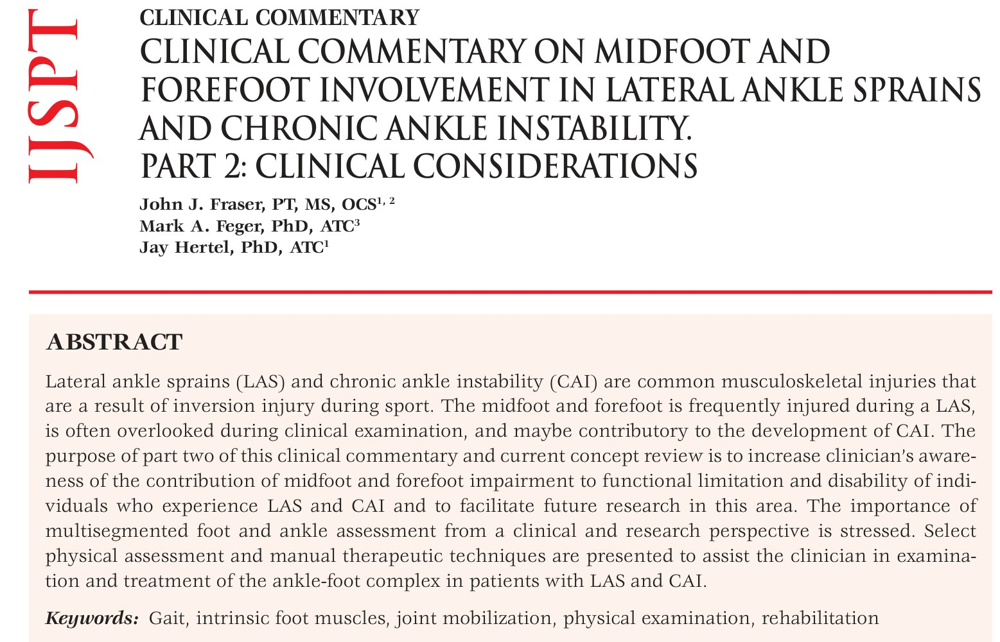
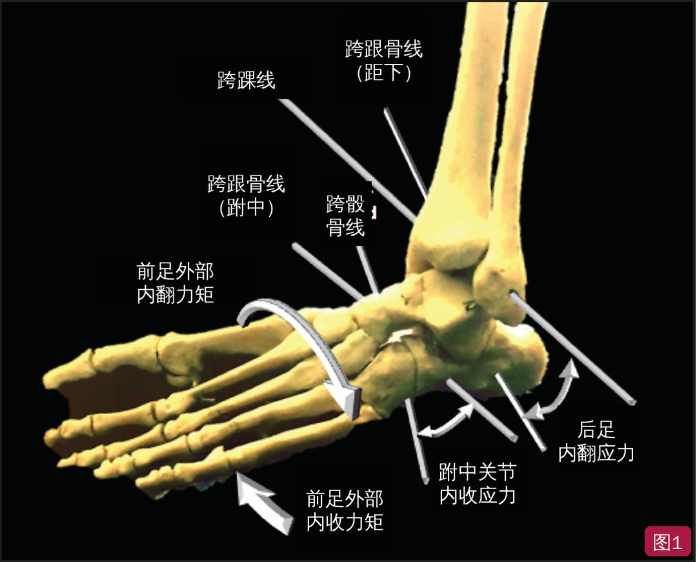
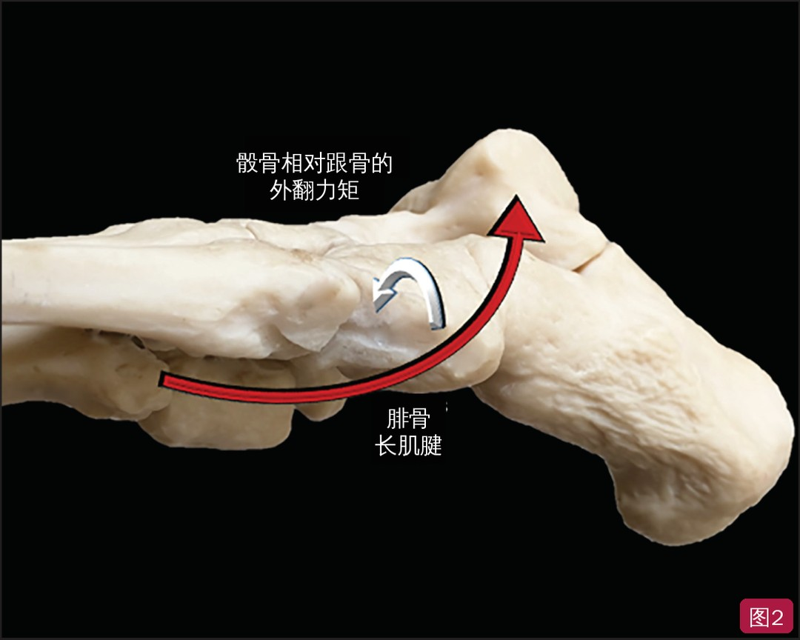
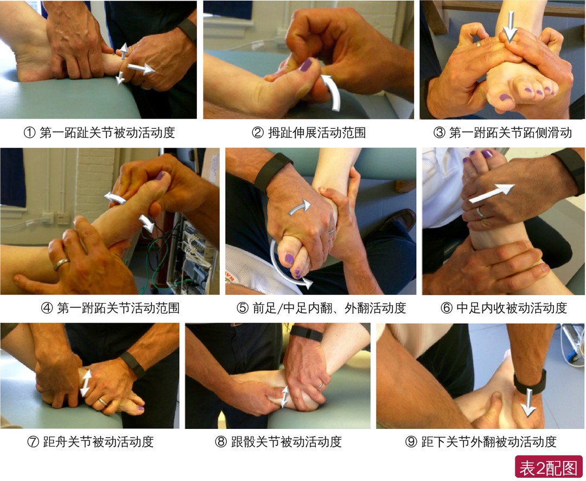
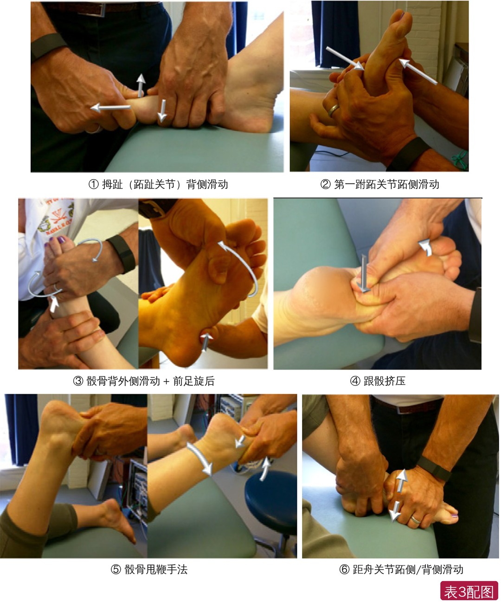
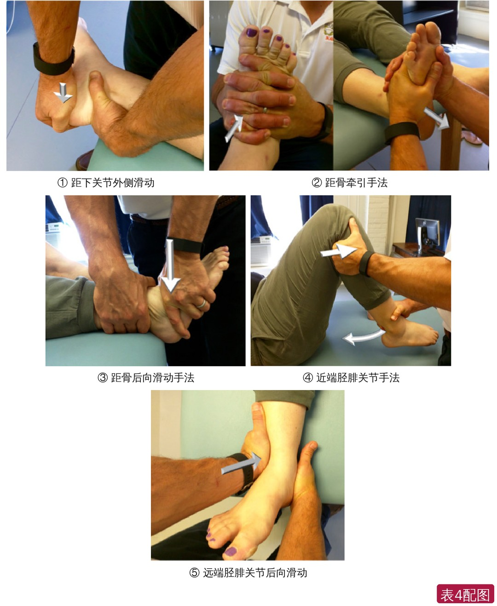

🔖原文首页（IJSPT 2016 年第 11 卷第 7 期）
📚 文献卡片
▪ 英文原题：Clinical Commentary on Midfoot and Forefoot Involvement in Lateral Ankle Sprains and Chronic Ankle Instability. Part 2: Clinical Considerations（外侧踝扭伤和慢性踝关节不稳中的中足、前足受累临床评论 第 2 部分：临床考量）
▪ 作者：John J. Fraser, PT, MS · Mark A. Feger, PhD, ATC · Jay Hertel, PhD, ATC
▪ 机构：弗吉尼亚大学运动机能学系；美国海军医学专业发展中心；弗吉尼亚联邦大学医学院
▪ 期刊：International Journal of Sports Physical Therapy（IJSPT）
▪ 年卷期：2016;11(7):1191-1203
▪ PMCID：PMC5159641
▪ 文章类型：临床评论 / 当前概念综述（第 1 部分为解剖与生物力学）
▪ 关键词：gait · intrinsic foot muscles · joint mobilization · physical examination · rehabilitation
外侧踝扭伤（LAS）在美国每年超过 200 万例，但只有 11% 的患者接受过有指导的物理治疗；处理不当可能留下残余问题——约 40% 的 LAS 患者会发展为慢性踝关节不稳（CAI），表现为神经肌肉控制受损、残余不稳、慢性疼痛和自觉功能障碍。
运动中的急性 LAS 旋转角速度可达 2124°/秒，跖屈可达 52°、内翻 126°、内收 99°。Søndergaard 发现，内翻扭伤时中足和前足也常常受伤，这一点可能被许多临床人员低估：疼痛常集中在距小腿或距下关节，中足的轻中度损伤因此被“掩盖”。
尽管对 LAS 和 CAI 的认识在进步，复发率并没有下降。本文（第 2 部分）的目的是提醒临床人员关注中足和前足受损对 LAS、CAI 患者的影响，强调多节段足踝评估，并给出一些检查和手法治疗技术。
| 问题 | 要点 |
|---|---|
| 中足有多常受伤？ | 711 例内翻扭伤中，单纯中足（分歧韧带/背侧跟骰韧带、距舟韧带）扭伤 172 例，跗中关节囊受累 33%；另一研究中分歧韧带损伤占 40.5% |
| 预后一样吗？ | 单纯外踝损伤与单纯跗中关节损伤，6～12 个月时疼痛、肿胀、打软腿感和再次扭伤的发生率相同 |
| CAI 的足部表现 | 步态更跖屈、更旋后，足底压力中心偏外，第一跖列更内翻，中足/外侧前足压力增加 |
| 可能机制 | 中足无法与后足“解锁”（关节活动受限、共收缩、神经损伤），腓骨长肌功能受损，骰骨滑轮作用受干扰 |
| 临床怎么做 | 即使中足不痛也要查：足形态（表 1）、关节活动度（表 2）、手法治疗（表 3、4）、内在肌和外在肌功能 |
一句话概括：踝扭伤后要把足踝当作整体来查和治，中足、前足即使没有症状也不能漏掉。
内翻损伤时，前足外部内翻力矩和内收力矩会在外侧中足产生内收应力、在后足产生内翻应力（图 1）。模拟 I 度扭伤中，内翻外力矩超过 23 N·m，内收外力矩超过 11 N·m；距腓前韧带和跟腓韧带可被拉长到静息长度的约 20% 和 16%。
美国物理治疗协会骨科分会的临床实践指南也建议：对 LAS 患者，要评估可能提示骨折、骰骨受累或中足损伤的足部疼痛。只要患者说自己“崴了脚”，就应同时彻底检查外踝和足部。

🔖图1：内翻损伤时，前足外部内翻力矩和内收力矩造成外侧中足（跗中关节）内收应力和后足内翻应力；图中灰线为跨踝线、跨跟骨线（距下/跗中）和跨骰骨线（英文标注已改为中文）
• 中足损伤包括骨折、脱位、半脱位、韧带扭伤或其组合，按致伤力的方向命名
• 机制常是踝足旋后：内侧柱受背向平移/轴向压缩，外侧柱受跖向平移/牵张；可导致跟骰、距舟或分歧韧带撕裂或止点撕脱骨折
• Søndergaard 前瞻性研究 711 例内翻扭伤：单纯中足扭伤 172 例（原文写 26%），跗中关节囊受累 237 例（33%）
• 另一研究：分歧韧带损伤占 40.5%；诊断为“外踝扭伤”的患者中，23% 其实是单纯分歧韧带损伤、外踝完好
• 跗中关节损伤可能被误诊为 LAS，延误或处理不当会造成持续的活动受限
• 跟骰关节对合轻度紊乱造成的外侧中足损伤，被认为是前足负重时后足受到异常内翻力所致；有作者描述为骰骨部分脱位、活动受限
• 前足旋后时，作用于外侧中足的背外侧外力矩可使骰骨相对跟骨向跖内侧移位
• 理论认为，内翻损伤时腓骨长肌强力收缩可造成跟骰半脱位：正常情况下腓骨长肌绕过腓骨沟时会使骰骨外翻并受压（图 2）；后足内翻 + 前足负重时，腓骨长肌对已内旋的骰骨施加内侧、背侧方向的力，引起下内侧半脱位
• 疼痛源于骰骨位置异常及其对关节囊、韧带和腓骨长肌腱的刺激

🔖图2：腓骨长肌收缩使骰骨相对跟骨外翻（红色箭头为腓骨长肌腱走行，白色弯箭头为骰骨外翻力矩；英文标注已改为中文）
CAI 指至少有一次明显踝扭伤，反复打软腿、不稳感或再次扭伤，并有自觉功能障碍。与健康人相比，CAI 患者行走时：
• 支撑面更宽，小腿-后足耦合的步间变异减少，小腿外旋幅度增加，足更跖屈、旋后，足底压力中心更偏外
• 触地前臀中肌和腓肠肌内侧头肌电活动更大、时间更长；腓骨长肌在触地前后活动增加；胫骨前肌的结果不一致
• 后足在触地前后可多 7° 内翻，被认为与再伤风险增加有关；影像学上足弓更高、呈高弓内翻，可能促进踝关节骨关节炎
• 足底压力：在后足和中足停留时间更长、向中央和外侧前足过渡延迟，中足和外侧前足压力增加，足跟和足趾压力减少；跑步时着地也更偏外
• 唯一用多节段足模型研究 CAI 的研究发现，第一跖列在支撑末期（87%～98%）平均多内翻 9.4°；LAS 应对者（2 年内扭伤但无不稳）在 10%～83% 支撑期也差 7.4°
健康人的研究提示，跗中关节在触地后与后足解耦，到支撑末期仍保持“解锁”——这挑战了“跗中关节在支撑末期锁定形成刚性杠杆”的传统观点。
• 中足无法与后足解耦：机械性或神经生理性限制；受限的中足 + 旋后的后足，可能导致压力中心外移
• 第一跖列活动不足：可能导致外侧压力增加；CAI 患者有拇短屈肌、拇收肌斜头萎缩和拇长屈肌肥大
• 共收缩：若跗横、跗跖或跗骨间韧带受损，稳定性共收缩可能让后足、中足、前足在整个支撑期“锁在一起”
• 神经损伤：LAS 后可见腓神经和胫神经传导速度下降（II 度扭伤分别 17%、10%，III 度 86%、83%），并有去神经肌电证据
• 腓骨长肌功能受损：它不仅外翻足，还使第一跖骨跖屈、稳定内侧柱和足弓、稳定跟骰关节；CAI 患者腓骨长肌向心/离心力量下降、激活时间缩短、潜伏期延长。骰骨是腓骨长肌腱的滑轮，骰骨轻度错位可能刺激腓骨肌腱、影响其功能
• 中足锁定能力受损可能迫使患者绕斜跖骨轴推离，这也能解释外侧前足压力增加；这种策略也可能是在神经生理受损下维持平衡
• 详细病史：症状类型和持续时间、复发、损伤机制、疼痛时间和部位、当前功能受限
• 询问能促进足内在肌肥大、改善足形的因素：极简鞋、赤脚时间、活动地面（户外 > 室内）——可间接反映内在肌力量
• 在非负重和负重下观察足形态，测量舟骨高度、足背高度、足长和足宽，评估纵弓和横弓的控制（表 1）
表1 足形态的观察与临床测量
| 节段 | 评估 | 说明 |
|---|---|---|
| 多节段 | 足姿势指数（6 项） | 站立位足姿势的综合评分，包括 1 项触诊和 5 项足形态观察 |
| 纵弓（中足） | 足长变化（非负重 → 完全负重） | 非负重和完全负重下足总长的变化 |
| 纵弓（中足） | Δ 足弓高度指数（舟骨高度/足长，非负重 → 完全负重） | 非负重和完全负重下，舟骨高度按足长标准化后的变化 |
| 纵弓和横弓（中足） | Δ 足背高度（非负重 → 完全负重） | 加载与卸载之间足弓垂直高度的变化，在足长 50% 处测量足背高度 |
| 纵弓和横弓（中足） | Δ 中足宽度（非负重 → 完全负重） | 加载与卸载之间中足宽度的变化，在足长 50% 处测量 |
| 纵弓和横弓（中足） | 足活动度幅值 | √[(Δ高度)² + (Δ宽度)²]，由中足高度和宽度变化合成；作者认为它可作为不同负荷下内在肌/外在肌控制足形的替代指标 |
| 纵弓和横弓（中足） | “多趾征” | 观察旋前足：站立时从后往前看，能看到外侧前足/外侧足趾 |
| 距下（后足） | “躲猫猫征” | 观察旋后后足：站立时从前往后看，能看到跟骨内侧 |
足姿势指数来自 Redmond 等（Clin Biomech 2006）。
内翻损伤后要触诊足部关节、韧带和肌肉，并逐个节段评估关节活动度和附属运动——常能发现节段间关节受限，这也是进行关节松动或手法治疗的时机。关节按正常、活动过度或活动不足分级（表 2）。
表2 足踝复合体关节活动度评估
| 评估 | 操作方法 |
|---|---|
| ① 第一跖趾关节被动活动度 | 屈膝仰卧，足趾悬出床沿。固定第一跖骨远端，牵开近节趾骨，平行关节线向跖侧滑动至终末感；再向背侧滑动重复。用被动活动度量表记录关节松弛度 |
| ② 拇趾伸展活动范围 | 屈膝仰卧，双足平放。固定第一跖骨，被动伸展跖趾关节至终末感，记录角度和终末感 |
| ③ 第一跗跖关节跖侧滑动 | 仰卧，小腿远端悬出床沿。拇指指腹固定第一跖骨远端，中指和示指指腹放在第一跗跖关节背侧远端；另一手叠指，平行关节线向跖侧施力。记录松弛度 |
| ④ 第一跗跖关节活动范围 | 仰卧。固定第一楔骨最远端，被动背屈第一跖骨至终末感，记录角度和终末感；再测跖屈 |
| ⑤ 前足和中足内翻/外翻活动度 | 仰卧，小腿远端悬出床沿。稳定手托住跟骨，防止后足内翻/外翻；用“C”形握法在跖骨头处握住前足，最大限度内翻至终末，记录终末感和角度；再测外翻 |
| ⑥ 中足内收被动活动度 | 评估跟骰、跟舟韧带和关节囊的松弛/激惹。仰卧，小腿远端悬出床沿，稳定手托住跟骨，对外侧前足施加内收力。记录松弛度 |
| ⑦ 距舟关节被动活动度 | 屈膝仰卧，双足平放。固定后足背侧，舟骨向背侧被动滑动至终末感，再向跖侧滑动。记录松弛度 |
| ⑧ 跟骰关节被动活动度 | 屈膝仰卧，足外侧悬出床沿。固定后足背侧，骰骨向背侧被动滑动至终末感，再向跖侧滑动。记录松弛度 |
| ⑨ 距下关节外翻被动活动度 | 受检侧在上侧卧，足悬出床沿。固定小腿和距骨，托住跟骨，经跟骨内侧向外施力。记录松弛度 |

🔖表2配图：①～⑨ 依次对应表 2 的九项关节活动度评估（照片来自原文表 2，名称已改为中文）
发现活动不足就可以进行关节松动/手法（表 3、4）。如果是节段不稳，治疗计划应改为保护为主：贴扎、支具、矫形鞋垫、足核心稳定训练，必要时转诊骨科或足病科考虑手术。
表3 中足和内侧前足的关节手法
| 节段 | 手法 | 适应证 | 操作方法 |
|---|---|---|---|
| 内侧前足/拇趾 | ① 拇趾（跖趾关节）背侧滑动 | 拇趾背屈受限 | 屈膝仰卧。用拇指指腹和示指近节固定跖骨远端（可垫一块筒状绷带或乳胶手套防滑），同法握住近节趾骨基底。先施 III 级轴向牵引使关节分离，再对近节施跖向力、同时对远节施背向反作用力，消除关节松弛。到达终末后可施高频小幅 IV 级振动手法 |
| 内侧前足/拇趾 | ② 第一跗跖关节跖侧滑动 | 第一跖骨背屈受限 | 仰卧。辅助手绕足外侧，与第一跖骨近端垂直，中指和示指指腹贴在第一跗跖关节远侧；主手从足内侧包住并叠在辅助手手指上，经第一跖骨近端施跖向力以消除松弛并引入背屈。到达终末后可施高频小幅 IV 级振动手法 |
| 中足 | ③ 骰骨背外侧滑动 + 前足旋后 | 跟骰关节活动不足或对合紊乱 | 仰卧。治疗师稳定手托住足跟、挡住骰骨跖侧；另一手握住跖骨头处前足施旋后力，从中足到前足逐节消除松弛。到达终末时加压旋后，同时对骰骨施背外侧反作用力 |
| 中足 | ④ 跟骰挤压 | 同上 | 俯卧，屈膝 70°。双手握足，双拇指指腹抵住骰骨跖侧，持续向背侧加压，踝缓慢牵伸到终末跖屈，中足和足趾最大屈曲 |
| 中足 | ⑤ 骰骨甩鞭手法 | 同上 | 俯卧，屈膝 70°～90°，距小腿关节中立位。双手握足，双拇指抵住骰骨跖侧，持续向背侧加压，快速伸膝并快速跖屈踝 |
| 中足 | ⑥ 距舟关节跖侧/背侧滑动 | 距舟/内侧纵弓活动不足 | 屈膝仰卧。稳定手手指绕住踝下方的距骨；松动手拇指指腹在舟骨背侧握住舟骨。固定距骨，向跖侧或背侧施力消除松弛，到达终末后施高速小幅手法或高频小幅 IV 级振动手法 |

🔖表3配图：①～⑥ 依次对应表 3 的中足和内侧前足手法（照片来自原文表 3，名称已改为中文）
表4 后足和小腿的关节手法
| 节段 | 手法 | 适应证 | 操作方法 |
|---|---|---|---|
| 距下 | ① 距下关节外侧滑动 | 后足外翻受限 | 患侧在下侧卧。稳定手手指绕住踝下方的距骨；松动手以鱼际接触跟骨内侧，经手臂向下施力消除松弛，到达终末后施高速小幅手法或高频小幅 IV 级振动手法 |
| 距小腿 | ② 距骨牵引手法 | 距小腿关节背屈或跖屈受限 | 仰卧。双手十指交叉放在足背最靠后、最接近关节轴处，用拇指把足维持在跖屈 10°，向尾侧牵引消除松弛，到达终末后施高速小幅手法 |
| 距小腿 | ③ 距骨后向滑动手法 | 距小腿关节背屈受限 | 仰卧，足伸出床沿。松动手以虎口软组织和鱼际接触踝下方的距骨前方，维持足跖屈 10°，另一手稳定小腿，对距骨施前向后的力，到达终末后施高速小幅手法或高频小幅 IV 级振动手法 |
| 胫腓（小腿） | ④ 近端胫腓关节手法 | 踝背屈和外翻时腓骨移动受限 | 仰卧屈髋屈膝。一手绕小腿近端外侧放入腘窝，以第 1、2 指掌指关节掌面抵住腓骨头；小腿外旋，屈膝至近端胫腓关节松弛被消除，到达终末后在小腿远端施高速小幅手法 |
| 胫腓（小腿） | ⑤ 远端胫腓关节后向滑动 | 同上 | 仰卧，治疗师稳定手托住足跟。松动手以鱼际接触外踝前外侧，施前向后的力消除松弛，到达终末后施高频小幅 IV 级松动 |

🔖表4配图：①～⑤ 依次对应表 4 的后足和小腿手法（照片来自原文表 4，名称已改为中文）
• 内在肌能控制纵弓变形。用卷尺或卡尺在非负重和站立下测舟骨高度、足长、足宽，快速又便宜
• 趾屈肌力量与内在肌和外在肌横截面积相关，内侧足底内在肌（拇短屈肌、趾短屈肌、足底方肌、蚓状肌、拇展肌）的大小是主要预测因子；趾屈肌徒手肌力测试简单快速
• 测试拇趾与外侧足趾的分离运动（拇趾外展、拇趾伸而 2～5 趾屈、拇趾屈而 2～5 趾伸）也能反映内在肌功能
• 超声可测量内在肌大小，作为训练（肥大）或废用/神经损伤（萎缩）的结局指标，也可能用于评估神经肌肉功能或做生物反馈，但测量属性还需研究
• 外在肌常用徒手肌力测试或手持测力计测开链背屈、跖屈、内翻、外翻，但不一定反映它们在多节段足中的功能。更有意义的是测试足形塑造、稳定和缓冲：例如能否在不同负荷下维持足弓（胫后肌与内在肌的协同）
• 测第一跖骨跖屈和内收可能比标准外翻测试更能反映腓骨长肌功能
• 发现缺陷后，用力量训练、神经肌肉电刺激、生物反馈和步态训练，逐步加载，先孤立再整合内在肌和外在肌
• 证据级别低：临床评论/当前概念综述（原文未标注证据级别，相当于 5 级），作者明确提出的机制多为“可能”“推测”；推荐的检查和手法缺少信度、效度和疗效研究
• 亮点：把中足、前足纳入踝扭伤的常规检查，给出可直接操作的足形态测量、9 项关节活动度评估和 11 项手法，并配有照片
• 数字有出入：Søndergaard 研究中 172/711 应为约 24%，原文写 26%；后文又写单纯跗中关节损伤占 23%
• 引用缺失：CAI 患者拇短屈肌、拇收肌斜头萎缩和拇长屈肌肥大的研究没有标注参考文献
• 定义不完整：表 2 多处要求用“被动活动度量表”记录松弛度，但文中没有给出量表；“足活动度幅值”是作者提出的未验证指标
• 疑似笔误：“更大程度地破坏跟骨的稳定或位置可能干扰滑轮机制”一句，按上下文应为骰骨；另有“this this”“hookl ying”“phanlangeal”等排版错误
① 不要只看踝：内翻扭伤常伴中足损伤（分歧韧带、跟骰、距舟），有时外踝完好、只有中足受伤
② 预后相同：单纯中足损伤与单纯外踝损伤 6～12 个月后的残留症状一样多
③ CAI 的足：更旋后、压力中心偏外、第一跖列更内翻、中足难以与后足解耦
④ 骰骨与腓骨长肌：骰骨是腓骨长肌的滑轮，骰骨错位会影响腓骨长肌功能
⑤ 检查：足形态（负重/非负重的舟骨高度、足宽等）+ 逐节段关节活动度 + 内在肌/外在肌功能
⑥ 治疗：活动不足 → 关节松动/手法；节段不稳 → 贴扎、支具、矫形鞋垫、足核心训练，必要时转诊
★ 核心理念：把足踝复合体当作一个整体来评估和治疗，即使中足没有症状
欢迎关注骨科康复小黄公众号，获取更多物理治疗的专业知识！
📄参考文献：
Fraser JJ, Feger MA, Hertel J. Clinical Commentary on Midfoot and Forefoot Involvement in Lateral Ankle Sprains and Chronic Ankle Instability. Part 2: Clinical Considerations. Int J Sports Phys Ther. 2016;11(7):1191-1203. PMCID: PMC5159641.
图 1、2 英文标注已改为中文；表 2～4 中的 20 张手法照片来自原文，按表格顺序拼图并加中文名称；表 1～4 已译为中文，仅用于学术交流。